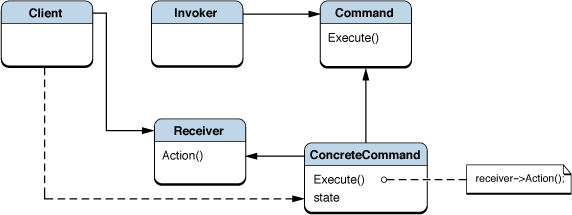

Command Pattern
요청 혹은 작업의 단위를 객체로 캡슐화 한다. Command는 객체가 상태 정보를 저장할 수 있고, 큐잉되거나 로깅될 수 있다는 면에서 C언어의 함수 포인터보다 막강한 기능을 제공한다.
구성
- Command
- 연산 혹은 연산의 집합을 실행하기 위한 인터페이스를 정의한다.
- Concrete Command
- Command interface를 구현하여 연산을 수행한다. 보통 Receiver 객체의 매개자로 기능한다.
- Client
- Concrete Command 객체를 만들고 Receiver를 설정한다.
- Invoker
- Command에 연산을 수행해 달라 요청한다.
- Receiver
- 요청을 어떻게 처리해야 하는지를 알고 있다. 이 기능은 종종 Command 객체 자체에 내장된다.
구조

장단점
- Command는 연산과 연산을 실제로 수행하는 객체 간의 결합도를 줄여준다.
예제
예제 코드 보기